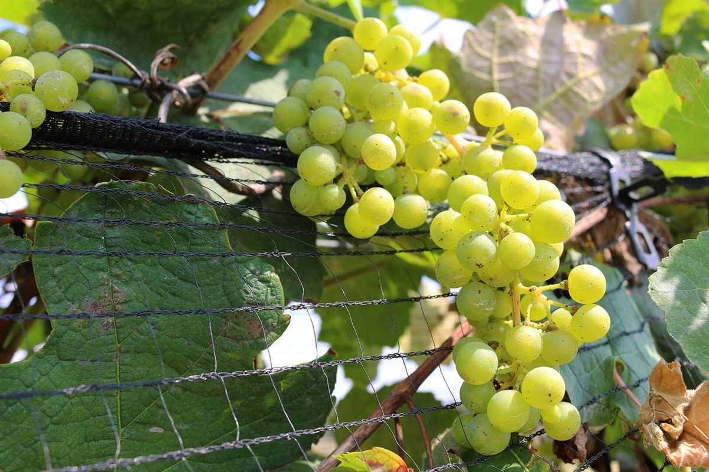
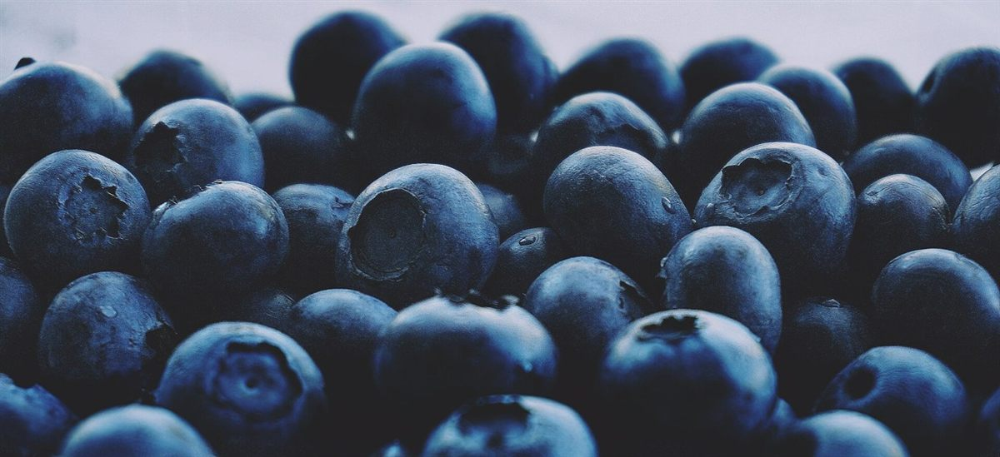
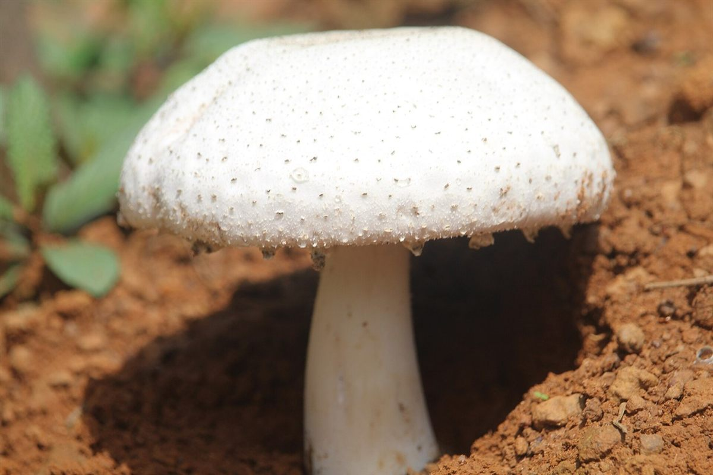
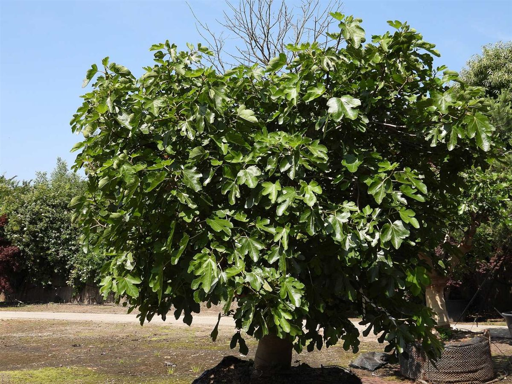

カフェ / 長野県南佐久郡佐久穂町
potta
人も、土地の食材も、まざりあっていい味になる。
長野県佐久穂町のカフェ「potta」のご案内ページです。地元産のそば粉のガレットや、季節の果物のスイーツが知られています。営業時間などは準備中です。





店のこと
「potta」は、まざりあうという名前
お店の名前は、具だくさんのスープを指す「ポタージュ(pottage)」から。いろいろな個性がまざりあって、いい味になる、という意味が込められていると、名付けを手がけたネーミング会社の事例で紹介されています。
オーナーご夫妻は、子どもの就学を機に佐久穂町へ移住。首都圏からの移住者が増える一方で、気軽に集まれる場所が少ないことから、移住者も町の人も観光客も、一緒に憩える場所を目指して2022年6月に開店したと、取材記事にあります。
地元の農園やハム屋から食材を仕入れ、靴を脱いで過ごせるキッズスペースもあるそうです。
上記は公開されている取材記事・事例紹介にもとづく内容です。最新の情報はInstagramでご確認ください。


メニュー
季節の食材をまぜあわせて
取材記事で紹介されている内容です。実際の提供内容は変わることがあります。


価格・営業時間・定休日: 準備中
口コミ
お客様の声(イメージ例)
以下は制作側が作成したイメージ例で、実在のお客様の声ではありません。
イメージ例
そば粉のガレットがもちもちで、野菜たっぷり。子どもを連れてでもゆっくりできました。
イメージ例
旅の途中に寄りましたが、地元の方ともお話ができて、あたたかい雰囲気でした。
イメージ例
季節の果物のスイーツが楽しみで、また来たくなるお店です。